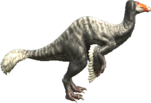
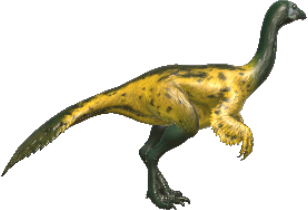
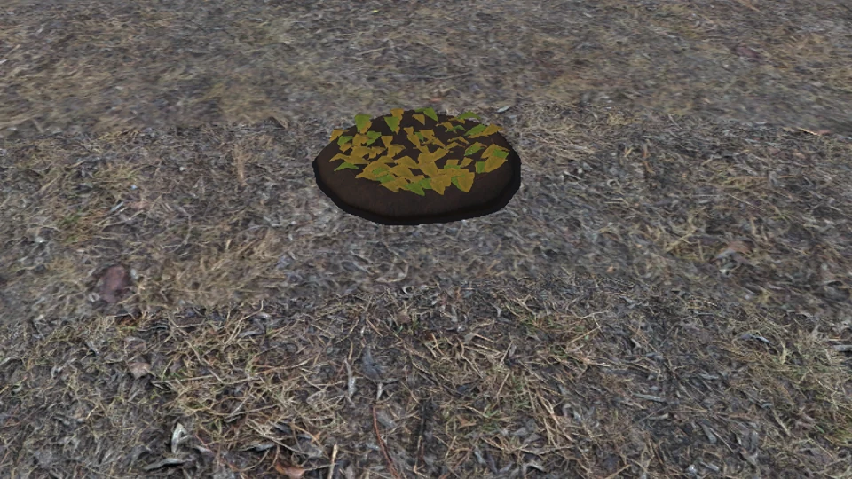
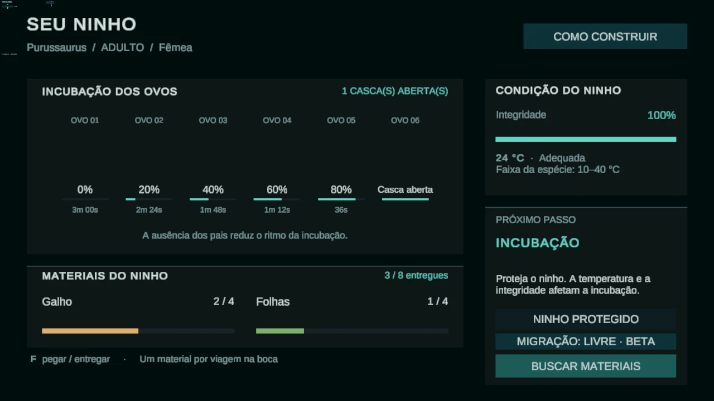
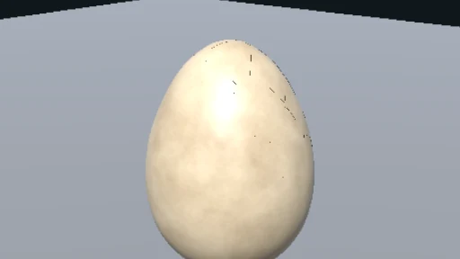

Dois novos jogáveis

Deinocheirus
Onívoro semiaquático de braços longos. Pode nascer em terra ou na água doce e afastar rivais com um tapa lateral.

Gallimimus
Dinossauro leve e veloz. Usa a agilidade para cruzar áreas abertas e escapar de predadores.
No menu Habilidades do Deinocheirus, ative o Tapa de Impacto uma vez. Quando a habilidade estiver pronta, o próximo ataque lateral com as mãos que acertar um alvo o empurra. O alcance do empurrão e o dano extra evoluem com a habilidade.
Da escolha do local ao primeiro ovo
A partir da fase jovem, escolha um local adequado na área de migração da espécie. Use a prévia para posicionar o ninho e depois traga galhos e folhas na boca para preencher os encaixes. Integrantes do grupo podem ajudar a reunir e entregar materiais.
Com o ninho concluído, uma fêmea elegível pode iniciar a postura no próprio ninho. O painel Seu Ninho mostra o progresso dos ovos, a temperatura e a integridade do abrigo.


Incubação e cuidado com os ovos
A incubação depende da temperatura e da integridade do ninho. Um ovo pode ser transportado para outro ninho concluído, mas ficar tempo demais fora da proteção pode comprometer sua viabilidade. A casca reage a danos e pode rachar.
Nesta versão do beta, a incubação do Deinocheirus e do Gallimimus pode chegar à abertura da casca. O nascimento de filhotes pelo ninho segue desativado para essas duas espécies.




Purussaurus entre a terra e a água
O Purussaurus controlado pela IA explora em terra, alterna entre andar e correr e volta à água para nadar, mergulhar e subir para respirar. Também pode caçar peixes e puxar presas capturadas na margem para dentro da água.